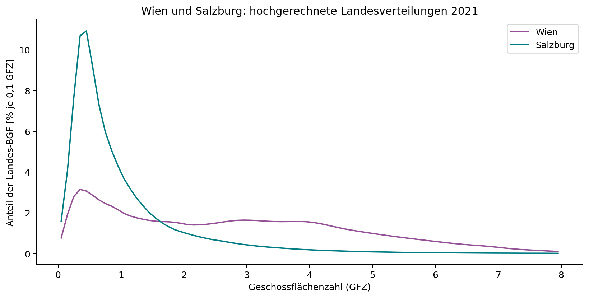
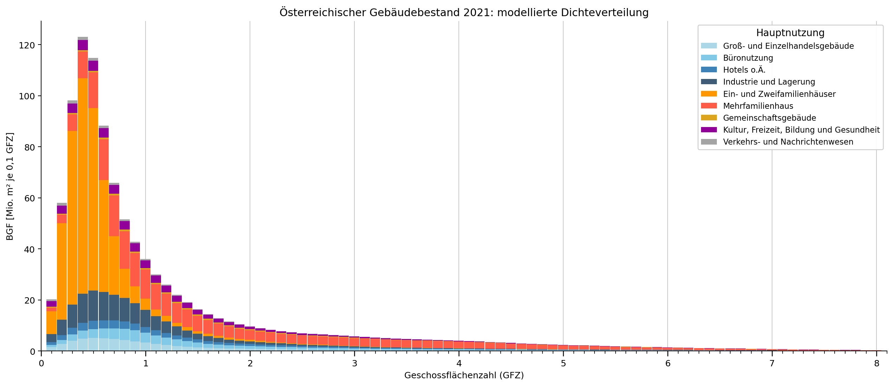
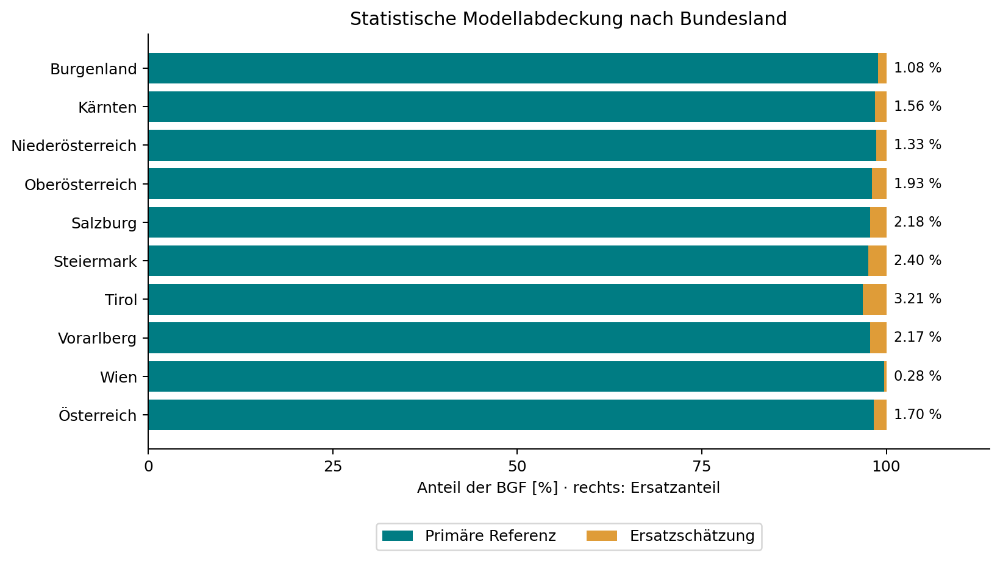

flowchart TB W["Einzelgebäude Wien"] --> KW["BGF-gewichtete KDE je Nutzung und Geschossklasse"] S["Einzelgebäude Salzburg"] --> KS["BGF-gewichtete KDE je Nutzung und Geschossklasse"] KW --> V["Wien"] KS --> L["Acht andere Bundesländer, jeweils separat"] T["Statistische NGF 2021 je Bundesland, Nutzung und Geschossklasse"] --> U["BGF = NGF / 0,8"] U --> V U --> L E["Bei weniger als fünf Referenzgebäuden: gekennzeichnete Ersatzregel"] -.-> V E -.-> L V --> AT["Österreich: Summe der neun BGF-Verteilungen"] L --> AT
Kontextfaktor Dichte
Vom nationalen Energieziel zur Verteilung auf Dichteklassen und Gebäudetypen
Die gemeinsame Bewertungslogik steht in Kontextfaktoren: Eine Bilanz, zwei gleichwertige Darstellungen. Der Dichtefaktor übersetzt die nationale Energieaufgabe in Anforderungen, die unterschiedliche Verhältnisse von Grundstücks- und Geschossfläche berücksichtigen.
Dichte: physikalisches Prinzip und kalibrierte Anforderung
Der Grundgedanke lässt sich mit einer vereinfachten Beziehung zeigen. Sei (A_G) die Grundstücksfläche und (A_B) die Bruttogrundfläche. Die Geschoßflächenzahl ist (d=A_B/A_G). Werden eine jährliche lokale Erzeugung (p) je Grundstücksfläche und ein jährlicher Bedarf (e) je Bruttogrundfläche angesetzt, folgt:
\[ b(d)=\frac{p A_G-e A_B}{A_B}=\frac{p}{d}-e. \tag{5.1}\]
Erzeugung und Bedarf sind in derselben Energiegröße auszudrücken; (b) ist dann eine jährliche Bilanz je m² BGF. Die Beziehung zeigt, weshalb das Erzeugungspotenzial je Geschossfläche bei steigender Dichte abnimmt, wenn das Potenzial je Grundstücksfläche gleich bleibt. In realen Projekten hängen Erzeugung und Bedarf zusätzlich von Gebäudeform, Nutzung, Verschattung und Technik ab (Schneider u. a. 2023, 11–12).
Aus diesem Zusammenhang wird noch kein verbindlicher Zielwert. Die Anforderungsfunktion ergänzt die Beziehung um eine Verschiebung auf der Dichteachse und eine Begrenzung. Ihre Parameter bestimmen die Lastenverteilung zwischen Quartierstypen. Die so festgelegte Kurve beschreibt eine Anforderung und kein technisches Potenzialmaximum (Schneider u. a. 2023, Gl. 7–8, S. 12–13).
Bei niedriger Dichte kann die Regel einen zusätzlichen Überschuss verlangen; bei hoher Dichte kann sie einen negativen Saldo ohne Kontextkorrektur zulassen. Dies lässt sich entweder als unterschiedlicher Zielwert oder als Gut-/Lastschrift gegenüber einem gemeinsamen Nullmaßstab ausdrücken. Die Gutschrift verändert die Anforderung, nicht den realen Energiebedarf.
Operationalisierung über den Gebäudebestand
Die nationale Kalibrierung braucht zusätzlich die Flächenverteilung des Bestands nach Dichte und Gebäudequalität. Ein Zielwert für einen häufigen Quartierstyp trägt zum nationalen Ergebnis stärker bei als derselbe Zielwert für einen seltenen Typ.
Der nationale Sektorsaldo ergibt sich aus der flächengewichteten Summe der spezifischen Zielsalden:
\[ B_{\mathrm{Sektor}} =\sum_k\sum_j A_{k,j}\,t_k(d_j). \tag{5.2}\]
(A_{k,j}) bezeichnet die Fläche des Gebäudetyps (k) in der Dichteklasse (j), (t_k(d_j)) dessen jährlichen spezifischen Zielsaldo. Fläche und Zielsaldo müssen dieselbe Flächendefinition verwenden. Bei einem Zielsaldo in kWh/(m² a) ergibt sich der Sektorsaldo in kWh/a.
Die Kalibrierung unterscheidet thermische Sanierung, Sanierung mit geringer PV-Ausstattung, PEQ-Sanierung und PEQ-Neubau mit Anteilen von 40 %, 20 %, 20 % und 20 %. Unsanierter Bestand hat im zugrunde gelegten Zielzustand einen Anteil von 0 %. Zusammen mit der Dichteverteilung bestimmen diese Annahmen den nationalen Sektorsaldo (Schneider u. a. 2023, Tab. 5 und Abb. 8, S. 12–14).
Die Anforderungen an PEQ hängen somit auch davon ab, wie viel der übrige Gebäudebestand beiträgt. Eine andere Sanierungsentwicklung oder Dichteverteilung kann eine neue Kalibrierung erfordern. Dafür müssen sowohl die Bestandsdaten als auch die Verteilungsentscheidungen dokumentiert werden.
[Abbildungsplatzhalter: Dichteabhängige Anforderungen und Flächenverteilung des Gebäudebestands, übernommen aus Schneider et al. (2023), Abb. 8.]
Österreichische Dichteverteilung als aktualisierte Datengrundlage
Für die Weiterentwicklung der Kalibrierung liegt eine bundeslandweise Hochrechnung des Gebäudebestands mit Statistikbezug 2021 vor. Sie beschreibt, wie sich die Bruttogrundfläche (BGF) über die Geschossflächenzahl (GFZ) verteilt. Dazu werden gebäudescharfe Referenzdaten aus Wien und Salzburg mit statistischen Nutzflächen nach Bundesland, Hauptnutzung und sieben Geschossklassen verbunden: ein bis fünf Geschosse, sechs bis zehn sowie elf und mehr Geschosse. Die Statistik umfasst neun Nutzungsgruppen.
Innerhalb jeder Referenzgruppe wird eine mit der BGF der Einzelgebäude gewichtete Kernel-Dichteschätzung (KDE) berechnet. Dadurch repräsentiert die Verteilung Gebäudefläche und nicht Gebäudeanzahl. Die normierten Wahrscheinlichkeitsmassen werden mit der statistischen BGF der jeweiligen Zielgruppe multipliziert. Die Umrechnung von statistischer Nettogrundfläche (NGF) in BGF erfolgt mit dem aus der früheren Analyse übernommenen Verhältnis NGF/BGF = 0,8. Dieser einheitliche Faktor ist eine Modellannahme.
Die KDE verwendet die Scott-Bandbreite und ein GFZ-Raster von 0 bis 20 mit einer Breite von 0,1. Sie wird auf diesem Raster normiert. Damit bleibt die zugeordnete Fläche erhalten; die Behandlung am Rand ist jedoch keine eigenständige physikalische Modellierung sehr geringer oder sehr hoher Dichten.
Für Wien gilt grundsätzlich die Wiener Referenz, für die übrigen Bundesländer die Salzburger. Liegen weniger als fünf geeignete Gebäude vor, wird zuerst dieselbe Nutzung und Geschossklasse aus Wien verwendet. Reicht auch diese Stichprobe nicht aus, folgt die nächstgelegene Geschossklasse derselben Nutzung, zuerst in der vorgesehenen Referenzregion und danach in Wien. Diese Ersatzregel ist für den vorliegenden Arbeitsstand freigegeben. Die Ziel-Flächen der Statistik werden dabei nicht verändert.

Die modellierte österreichische BGF beträgt rund 1.058,9 Mio. m², entsprechend 847,1 Mio. m² NGF. Die Hochrechnung umfasst 516 positive Kombinationen aus Bundesland, Nutzung und Geschossklasse. Davon werden 425 unmittelbar durch die vorgesehene Referenz und 91 durch Ersatzzuordnungen abgebildet. Flächengewichtet entfallen 98,304 % auf primäre Referenzen und 1,696 % auf Ersatzschätzungen. Die Zahl betroffener Kategorien ist deshalb nicht mit ihrem Flächenanteil gleichzusetzen.


python der Statistikaufbereitung und gebäudescharfes Blatt Rohdaten. Rundungsdifferenzen in der Darstellung sind möglich.
| Bundesland | BGF [Mio. m²] |
|---|---|
| Burgenland | 38,043 |
| Kärnten | 68,058 |
| Niederösterreich | 214,888 |
| Oberösterreich | 197,149 |
| Salzburg | 69,494 |
| Steiermark | 150,038 |
| Tirol | 99,794 |
| Vorarlberg | 46,683 |
| Wien | 174,787 |
| Österreich | 1.058,935 |
Das Rechenmodul Berechnungen/gfz_at/ stellt zusätzlich die vollständige Tabelle für Bundesland × Nutzung × Geschossklasse mit Ziel-BGF, zugeteilter BGF, Bilanzdifferenz, Referenzregion, Referenzklasse und Stichprobenumfang bereit. Die Neuberechnung aus den ursprünglichen Excel-Eingaben reproduziert die übergebenen Ergebnisse bis auf numerische Rundungsreste. Die Summe der neun Bundesländer stimmt mit den österreichischen Kontrollsummen überein; die BGF bleibt in jeder positiven Zielkombination erhalten. Die flächengewichtete mittlere GFZ des Modells beträgt rund 1,231. Sie ist ein Mittel über die BGF-Verteilung und nicht das Verhältnis der gesamten BGF zur gesamten Grundstücksfläche Österreichs.
Die Übertragbarkeit der Salzburger Stichprobe auf andere Bundesländer, der einheitliche NGF/BGF-Faktor, auffällige Geschossklassenzuordnungen und die Empfindlichkeit gegenüber KDE-Parametern bleiben dokumentierte methodische Einschränkungen. Eine zusätzliche Sensitivitätsrunde wurde für diesen Arbeitsstand nicht durchgeführt. Der Bestand 2021 ist außerdem noch kein Zielbestand 2040: Neubau, Abriss, Verdichtung, Sanierung und energetische Typologien müssen in einem anschließenden Modellschritt ergänzt werden. Die hier dargestellte Aktualisierung ersetzt daher noch nicht die zuvor beschriebenen Energie- und THG-Zielwerte oder deren Flächenbezüge.
Dichte: Der städtebauliche Entwurf verändert beide Seiten
Die Geschoßflächenzahl beschreibt das Verhältnis von Bruttogrundfläche zu Grundstücksfläche. Mit steigender Dichte nimmt die verfügbare lokale Erzeugungsfläche je Geschossfläche typischerweise ab. Der Dichtefaktor berücksichtigt diesen strukturellen Zusammenhang durch eine kalibrierte Anforderungsfunktion. Die folgenden Abschnitte erläutern ihre Form und Kalibrierung; das nationale Energiezielbild steht in Sektorales Zielbild Energie.
Bei niedriger Dichte verlangt die Regel einen zusätzlichen Überschuss. Bei hoher Dichte kann sie einen negativen Saldo vor Kontextkorrektur zulassen. Daraus folgt keine pauschale Empfehlung, durch zusätzliche Geschossfläche eine günstigere Bewertung herzustellen: Mehr Fläche verändert zugleich Bedarf, Herstellungsemissionen und absolute Ressourceninanspruchnahme. Ein Variantenvergleich muss alle diese Änderungen erfassen.
Die Architektur beeinflusst das tatsächliche Potenzial durch Baukörperstellung, Verschattung, Dach- und Fassadennutzung. Der Dichtefaktor ersetzt diese Prüfung nicht. Zwei Quartiere mit derselben GFZ können unterschiedliche nutzbare PV-Flächen haben. Ebenso konkurrieren auf dem Dach PV, technische Aufbauten, Begrünung, Aufenthalt und Wartungswege um Fläche. Der nachgewiesene Ertrag muss aus einem umsetzbaren Entwurf stammen.
Die Dichtekorrektur verändert die Anforderungen abhängig von der Geschoßflächenzahl. Niedrige Dichten führen zu zusätzlichen Anforderungen, während höhere Dichten eine Gutschrift erhalten können.

Abbildung 5.5 veranschaulicht die Verteilung der energetischen Anforderungen zwischen unterschiedlichen baulichen Dichten. Die dargestellten Werte sind von den tatsächlich erreichten Energieflüssen des Quartiers zu unterscheiden.